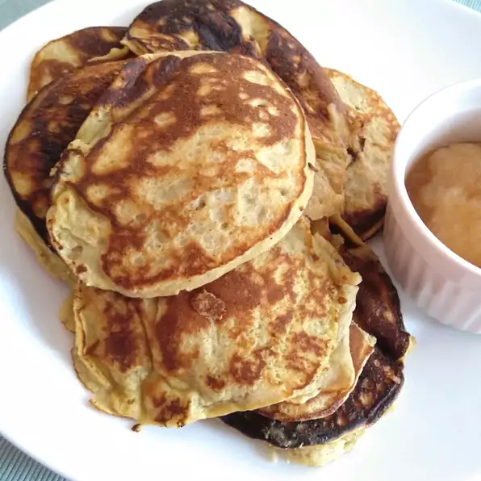

Pancakes

Description
Great paleo pancakes. Healthy for the whole family. Double this recipe for 4 people.
Ingredients
- 1 banana, mashed
- 3 eggs
- ¼ cup almond flour
- 1 tablespoon almond butter
- 1 teaspoon vanilla extract
- ½ teaspoon ground cinnamon
- ⅛ teaspoon baking soda
- ⅛ teaspoon baking powder
- 1 teaspoon olive oil, or as needed